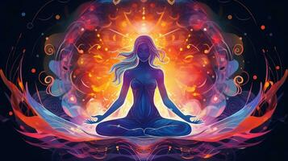

Descubra agora se você é uma bruxa!
Há muito tempo tem se criado teorias sobre a vida fora da terra, dentre muitas delas algumas afirmam que nós somos originalmente de outro planeta e fomos enviados por nossos superiores para estudarem o nosso desenvolvimento na Terra, ou que seres extraterrestre se infiltraram na pele de muitos humanos e estão aqui para nós monitorar. E então será que você é um deles e não sabe, descubra agora com análises através da sua personalidade e boa sorte!


3
Você tem o costume de falar sozinha?


7
Você acredita em signo?
8

Você sente que é diferente das pessoas?
Aparentemente, você é humana
Segundo demonstrado por você neste Quiz, sua "personalidade" não apresenta sinais de que você se diferencia de maneira relevante(neste Quiz) das outras pessoas, você é Humano.